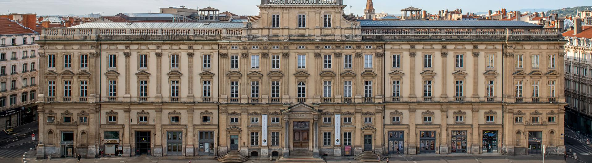
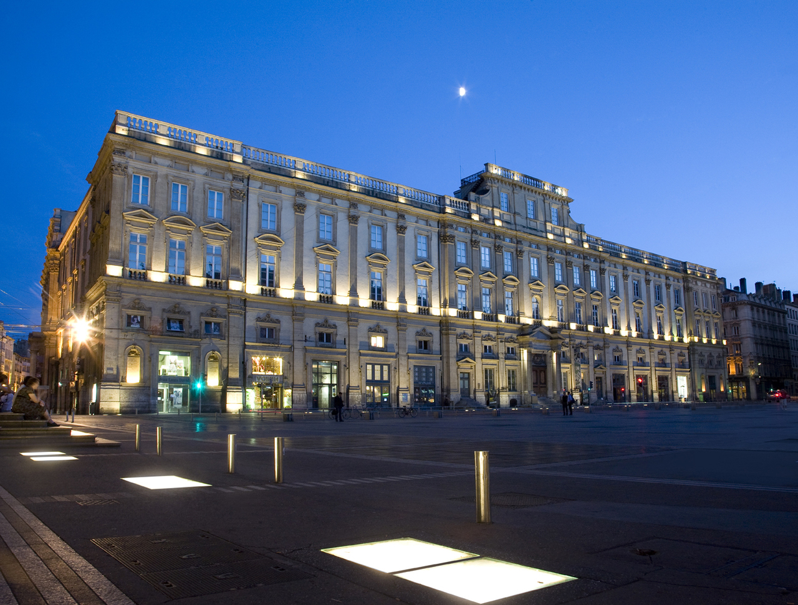
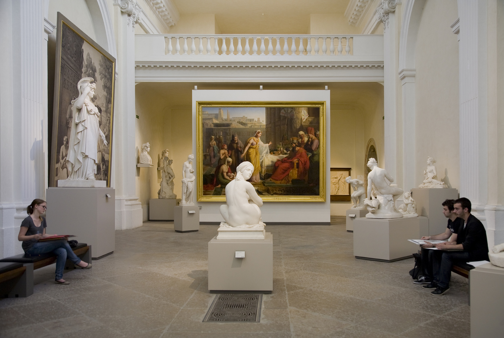
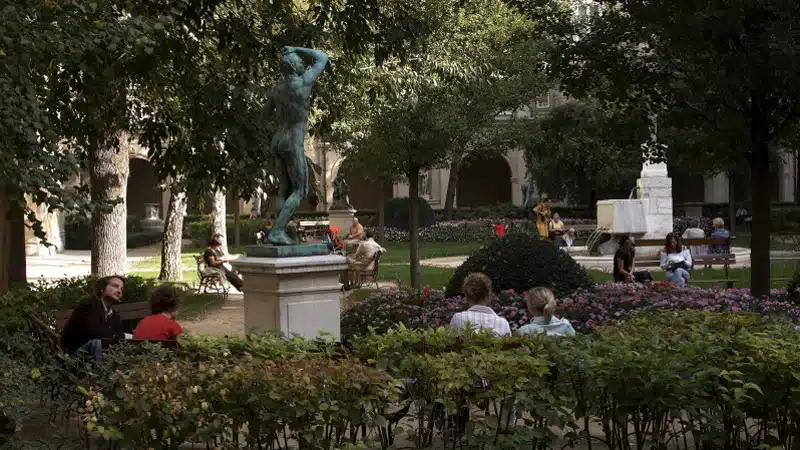

The Museum of Fine Arts of Lyon is one of the most important art museums in France. Located in a historic 17th-century building near Place des Terreaux, it houses an extensive collection of artworks from different periods of history.
Visitors can explore galleries featuring paintings, sculptures, antiquities, and decorative arts from ancient civilizations to modern times. The museum’s exhibits include works by renowned European artists as well as impressive archaeological artifacts.
Today, the Museum of Fine Arts of Lyon continues to inspire visitors with its rich collections and elegant setting. Its diverse exhibitions make it a must-visit destination for art enthusiasts exploring the cultural side of Lyon.


